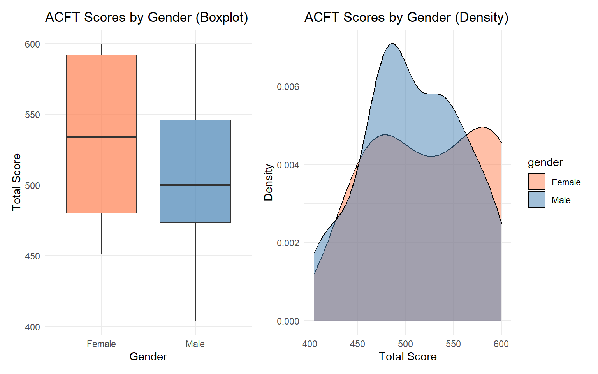

soldier_id age gender deadlift
Min. : 1.00 Min. :18.00 Length:100 Min. :176.0
1st Qu.: 25.75 1st Qu.:25.00 Class :character 1st Qu.:252.5
Median : 50.50 Median :31.50 Mode :character Median :284.5
Mean : 50.50 Mean :31.33 Mean :282.6
3rd Qu.: 75.25 3rd Qu.:38.00 3rd Qu.:314.0
Max. :100.00 Max. :45.00 Max. :376.0
spt hrpu sdc plank
Min. : 5.300 Min. :26.00 Min. :1.700 Min. :1.400
1st Qu.: 8.175 1st Qu.:45.00 1st Qu.:2.600 1st Qu.:2.700
Median : 9.250 Median :54.50 Median :2.800 Median :3.100
Mean : 9.244 Mean :53.95 Mean :2.819 Mean :3.123
3rd Qu.:10.200 3rd Qu.:64.00 3rd Qu.:3.025 3rd Qu.:3.525
Max. :12.800 Max. :80.00 Max. :3.700 Max. :4.900
run total_score
Min. : 8.70 Min. :404.0
1st Qu.:12.80 1st Qu.:474.2
Median :14.30 Median :502.0
Mean :14.26 Mean :509.9
3rd Qu.:15.50 3rd Qu.:548.5
Max. :20.70 Max. :600.0
# Side-by-side boxplotsp1 <-ggplot(acft_data, aes(x = gender, y = total_score, fill = gender)) +geom_boxplot(alpha =0.7) +scale_fill_manual(values =c("coral", "steelblue")) +labs(title ="ACFT Scores by Gender (Boxplot)",x ="Gender", y ="Total Score") +theme_minimal() +theme(legend.position ="none")# Overlapping density plotsp2 <-ggplot(acft_data, aes(x = total_score, fill = gender)) +geom_density(alpha =0.5) +scale_fill_manual(values =c("coral", "steelblue")) +labs(title ="ACFT Scores by Gender (Density)",x ="Total Score", y ="Density") +theme_minimal()p1 | p2

3.7 Step 7: Bivariate Analysis - Two Quantitative Variables
Is there a relationship between age and total ACFT score?
Code
# Scatterplotggplot(acft_data, aes(x = age, y = total_score)) +geom_point(alpha =0.6, color ="steelblue", size =2) +geom_smooth(method ="lm", se =TRUE, color ="red") +labs(title ="Relationship Between Age and ACFT Score",subtitle =paste("Correlation:", round(cor(acft_data$age, acft_data$total_score), 3)),x ="Age (years)", y ="Total ACFT Score") +theme_minimal()
Let’s practice EDA on a different dataset - the classic diamonds dataset from ggplot2.
Code
# Load diamonds datadata(diamonds)# Take a random sample for easier computationdiamonds_sample <- diamonds %>%sample_n(1000)# Quick overviewglimpse(diamonds_sample)
Finding: Strong positive correlation (r ≈ 0.92) between carat and price!
5 Your Turn: Practice EDA
5.1 Practice Exercise
Using the mtcars dataset, perform a complete EDA:
Code
# Load the datasetdata(mtcars)# Your analysis here:# 1. Inspect structure and summary# 2. Analyze the distribution of mpg (miles per gallon)# 3. Compare mpg across different numbers of cylinders (cyl)# 4. Examine relationship between weight (wt) and mpg# 5. Identify any outliers# 6. Create appropriate visualizations
Guiding Questions:
What is the typical fuel efficiency (mpg)?
How does mpg vary by number of cylinders?
Is there a relationship between car weight and fuel efficiency?
Are there any unusual cars (outliers)?
6 EDA Best Practices
Guidelines for Effective EDA
Start simple: Basic summaries and plots first
Choose appropriate visualizations:
Categorical: Bar charts, pie charts
Quantitative: Histograms, boxplots, density plots
Two quantitative: Scatterplots
Categorical + Quantitative: Side-by-side boxplots
Look for patterns:
Trends, clusters, outliers
Skewness and symmetry
Unusual observations
Compare measures:
Mean vs. median (skewness indicator)
Range vs. IQR (outlier sensitivity)
Document everything:
Clear titles and labels
Interpretation of findings
Questions for further investigation
Be skeptical:
Check data quality
Verify unusual patterns
Consider alternative explanations
7 Common Pitfalls to Avoid
EDA Mistakes
Jumping to conclusions without exploring data first
Using inappropriate visualizations for data type
Ignoring outliers or blindly removing them
Not checking assumptions (e.g., normality)
Forgetting to label axes or provide context
Overinterpreting correlation as causation
Not considering practical significance vs. statistical patterns
Looking Ahead: In Block I Lessons 6-14, we’ll move from describing data (EDA) to probability theory and random variables, which provide the theoretical foundation for statistical inference.
Practice your EDA skills with the WebAssign EDA assignment
Explore additional datasets:
iris - Fisher’s iris data
mpg - Fuel economy data
starwars - Star Wars character data
11 Take-Home Challenge
Choose one of the following datasets and perform a complete EDA. Prepare a 1-page summary with:
2-3 key visualizations
Summary statistics table
3-5 bullet points of key findings
Options:
airquality - Daily air quality measurements in New York
chickwts - Chicken weight by feed type
Your own dataset from Army Vantage (for course project!)
Code
# Example: Load a datasetdata(airquality)# Start your EDA here!
Source Code
---title: "Lesson 5: Exploratory Data Analysis Lab"subtitle: "MA206X: Probability and Statistics"date: today---```{r setup, include=FALSE}library(tidyverse)library(kableExtra)library(patchwork)set.seed(206)```::: {.learning-objectives}### Learning ObjectivesBy the end of this lesson, you will be able to:1. Execute EDA using appropriate graphs and summaries2. Justify choices of displays for variable types3. Communicate findings with clear, concise annotations**Reading:** Review Devore 1.1-1.4:::## Introduction**Exploratory Data Analysis (EDA)** is the critical first step in any statistical investigation. Before running formal tests or building models, we must:- Understand the structure of our data- Identify patterns, trends, and anomalies- Check for outliers and data quality issues- Generate hypotheses for further investigationThis lesson brings together everything we've learned in Lessons 1-4 through hands-on practice with real datasets.## The EDA Workflow::: {.callout-tip}## Standard EDA Process1. **Load and inspect** the data structure2. **Clean** the data (handle missing values, fix types)3. **Summarize** with descriptive statistics4. **Visualize** distributions and relationships5. **Identify** patterns, outliers, and anomalies6. **Document** findings and insights:::## Case Study 1: Military Physical Fitness DataLet's analyze simulated ACFT data for 100 soldiers.### Step 1: Load and Inspect```{r}# Create simulated ACFT datasetacft_data <-tibble(soldier_id =1:100,age =sample(18:45, 100, replace =TRUE),gender =sample(c("Male", "Female"), 100, replace =TRUE, prob =c(0.85, 0.15)),deadlift =round(rnorm(100, mean =280, sd =40)),spt =round(rnorm(100, mean =9.5, sd =1.5), 1),hrpu =round(rnorm(100, mean =55, sd =12)),sdc =round(rnorm(100, mean =2.8, sd =0.4), 1),plank =round(rnorm(100, mean =3.2, sd =0.6), 1),run =round(rnorm(100, mean =14.5, sd =2.0), 1)) %>%mutate(# Calculate total score (simplified scoring)total_score = (deadlift/3) + (15-spt)*20+ hrpu*2+ (4-sdc)*50+ plank*25+ (20-run)*10 ) %>%mutate(total_score =pmax(360, pmin(600, round(total_score))))# View first few rowshead(acft_data, 10)```### Step 2: Check Data Structure```{r}# Data dimensionsdim(acft_data)# Variable typesstr(acft_data)# Summary statisticssummary(acft_data)```### Step 3: Univariate Analysis - Categorical Variables```{r}# Frequency table for gendergender_table <- acft_data %>%count(gender) %>%mutate(percentage =round(n/sum(n)*100, 1))gender_table %>%kable(col.names =c("Gender", "Count", "Percentage")) %>%kable_styling(bootstrap_options =c("striped", "hover"))```**Visualization**:```{r, fig.height=4}ggplot(acft_data, aes(x = gender, fill = gender)) +geom_bar(alpha =0.7) +geom_text(stat ="count", aes(label =after_stat(count)), vjust =-0.5) +scale_fill_manual(values =c("coral", "steelblue")) +labs(title ="Distribution of Soldiers by Gender",x ="Gender", y ="Count") +theme_minimal() +theme(legend.position ="none")```### Step 4: Univariate Analysis - Quantitative VariablesLet's analyze the distribution of total ACFT scores:```{r}# Summary statisticsscore_summary <- acft_data %>%summarise(n =n(),Mean =round(mean(total_score), 1),SD =round(sd(total_score), 1),Min =min(total_score),Q1 =quantile(total_score, 0.25),Median =median(total_score),Q3 =quantile(total_score, 0.75),Max =max(total_score),IQR =IQR(total_score),Range =max(total_score) -min(total_score) )score_summary %>%kable() %>%kable_styling(bootstrap_options =c("striped", "hover"))```**Multiple Visualizations**:```{r, fig.height=8}# Histogramp1 <-ggplot(acft_data, aes(x = total_score)) +geom_histogram(bins =20, fill ="steelblue", color ="white", alpha =0.7) +geom_vline(xintercept =mean(acft_data$total_score),color ="red", linetype ="dashed", linewidth =1) +geom_vline(xintercept =median(acft_data$total_score),color ="darkgreen", linetype ="dotted", linewidth =1) +labs(title ="Histogram of Total ACFT Scores",subtitle ="Red = Mean, Green = Median",x ="Total Score", y ="Frequency") +theme_minimal()# Boxplotp2 <-ggplot(acft_data, aes(y = total_score)) +geom_boxplot(fill ="steelblue", alpha =0.7) +labs(title ="Boxplot of Total ACFT Scores",y ="Total Score") +theme_minimal() +theme(axis.text.x =element_blank(), axis.ticks.x =element_blank())# Density plotp3 <-ggplot(acft_data, aes(x = total_score)) +geom_density(fill ="steelblue", alpha =0.5) +labs(title ="Density Plot of Total ACFT Scores",x ="Total Score", y ="Density") +theme_minimal()# QQ plot to check normalityp4 <-ggplot(acft_data, aes(sample = total_score)) +stat_qq() +stat_qq_line(color ="red") +labs(title ="Q-Q Plot: Checking Normality",x ="Theoretical Quantiles", y ="Sample Quantiles") +theme_minimal()# Combine plots(p1 | p2) / (p3 | p4)```**Interpretation**:- Distribution appears roughly symmetric (mean ≈ median)- No extreme outliers visible in boxplot- Q-Q plot shows slight deviations from normality at tails- Most scores cluster between 450-500### Step 5: Bivariate Analysis - Two Categorical Variables```{r}# Cross-tabulationgender_age_table <- acft_data %>%mutate(age_group =cut(age, breaks =c(17, 25, 35, 50),labels =c("18-25", "26-35", "36+"))) %>%count(gender, age_group) %>%pivot_wider(names_from = age_group, values_from = n, values_fill =0)gender_age_table %>%kable() %>%kable_styling(bootstrap_options =c("striped", "hover"))```**Visualization**:```{r, fig.height=4}acft_data %>%mutate(age_group =cut(age, breaks =c(17, 25, 35, 50),labels =c("18-25", "26-35", "36+"))) %>%ggplot(aes(x = age_group, fill = gender)) +geom_bar(position ="dodge", alpha =0.7) +scale_fill_manual(values =c("coral", "steelblue")) +labs(title ="Distribution by Age Group and Gender",x ="Age Group", y ="Count") +theme_minimal()```### Step 6: Bivariate Analysis - Categorical vs. QuantitativeHow do total scores differ by gender?```{r}# Summary by gendergender_scores <- acft_data %>%group_by(gender) %>%summarise(n =n(),Mean =round(mean(total_score), 1),SD =round(sd(total_score), 1),Median =median(total_score),IQR =IQR(total_score) )gender_scores %>%kable() %>%kable_styling(bootstrap_options =c("striped", "hover"))```**Visualizations**:```{r, fig.height=5}# Side-by-side boxplotsp1 <-ggplot(acft_data, aes(x = gender, y = total_score, fill = gender)) +geom_boxplot(alpha =0.7) +scale_fill_manual(values =c("coral", "steelblue")) +labs(title ="ACFT Scores by Gender (Boxplot)",x ="Gender", y ="Total Score") +theme_minimal() +theme(legend.position ="none")# Overlapping density plotsp2 <-ggplot(acft_data, aes(x = total_score, fill = gender)) +geom_density(alpha =0.5) +scale_fill_manual(values =c("coral", "steelblue")) +labs(title ="ACFT Scores by Gender (Density)",x ="Total Score", y ="Density") +theme_minimal()p1 | p2```### Step 7: Bivariate Analysis - Two Quantitative VariablesIs there a relationship between age and total ACFT score?```{r, fig.height=5}# Scatterplotggplot(acft_data, aes(x = age, y = total_score)) +geom_point(alpha =0.6, color ="steelblue", size =2) +geom_smooth(method ="lm", se =TRUE, color ="red") +labs(title ="Relationship Between Age and ACFT Score",subtitle =paste("Correlation:", round(cor(acft_data$age, acft_data$total_score), 3)),x ="Age (years)", y ="Total ACFT Score") +theme_minimal()``````{r}# Calculate correlationcorrelation <-cor(acft_data$age, acft_data$total_score)cat("Correlation coefficient:", round(correlation, 3), "\n")```**Interpretation**:- Weak negative correlation between age and score- As age increases, scores tend to decrease slightly- Relationship is not very strong (r ≈ `r round(correlation, 3)`)### Step 8: Multivariate AnalysisLet's examine all event scores together:```{r, fig.height=6}# Reshape data for faceted plotsacft_long <- acft_data %>%select(soldier_id, deadlift, spt, hrpu, sdc, plank, run) %>%pivot_longer(cols =-soldier_id, names_to ="event", values_to ="score")# Faceted histogramsggplot(acft_long, aes(x = score, fill = event)) +geom_histogram(bins =15, alpha =0.7, show.legend =FALSE) +facet_wrap(~event, scales ="free") +labs(title ="Distribution of Scores Across All ACFT Events",x ="Score", y ="Frequency") +theme_minimal()```**Correlation matrix**:```{r}# Select only numeric event columnscor_matrix <- acft_data %>%select(deadlift, spt, hrpu, sdc, plank, run, total_score) %>%cor() %>%round(2)cor_matrix %>%kable() %>%kable_styling(bootstrap_options =c("striped", "hover"), font_size =11)```### Step 9: Identify Outliers```{r}# Use IQR method to detect outliers in total scoreQ1 <-quantile(acft_data$total_score, 0.25)Q3 <-quantile(acft_data$total_score, 0.75)IQR_val <- Q3 - Q1lower_fence <- Q1 -1.5* IQR_valupper_fence <- Q3 +1.5* IQR_valoutliers <- acft_data %>%filter(total_score < lower_fence | total_score > upper_fence) %>%select(soldier_id, age, gender, total_score)cat("Outlier detection thresholds:\n")cat("Lower fence:", lower_fence, "\n")cat("Upper fence:", upper_fence, "\n\n")if(nrow(outliers) >0) {cat("Outliers detected:\n")print(outliers)} else {cat("No outliers detected.\n")}```## Case Study 2: Diamonds DatasetLet's practice EDA on a different dataset - the classic `diamonds` dataset from ggplot2.```{r}# Load diamonds datadata(diamonds)# Take a random sample for easier computationdiamonds_sample <- diamonds %>%sample_n(1000)# Quick overviewglimpse(diamonds_sample)```### Task 1: Explore Price Distribution```{r, fig.height=4}# Summary statisticsdiamonds_sample %>%summarise(Mean =round(mean(price), 2),Median =median(price),SD =round(sd(price), 2),IQR =IQR(price),Min =min(price),Max =max(price) ) %>%kable() %>%kable_styling(bootstrap_options =c("striped", "hover"))# Histogram with mean and medianggplot(diamonds_sample, aes(x = price)) +geom_histogram(bins =30, fill ="darkgreen", color ="white", alpha =0.7) +geom_vline(xintercept =mean(diamonds_sample$price),color ="red", linetype ="dashed", linewidth =1) +geom_vline(xintercept =median(diamonds_sample$price),color ="blue", linetype ="dotted", linewidth =1) +labs(title ="Distribution of Diamond Prices",subtitle ="Red = Mean | Blue = Median",x ="Price (USD)", y ="Frequency") +theme_minimal()```**Observation**: Right-skewed distribution (mean > median), indicating high-priced diamonds pull the average up.### Task 2: Compare Prices Across Cut Quality```{r, fig.height=5}# Summary by cutcut_summary <- diamonds_sample %>%group_by(cut) %>%summarise(n =n(),Mean_Price =round(mean(price), 2),Median_Price =median(price),SD =round(sd(price), 2) ) %>%arrange(desc(Mean_Price))cut_summary %>%kable() %>%kable_styling(bootstrap_options =c("striped", "hover"))# Boxplot comparisonggplot(diamonds_sample, aes(x = cut, y = price, fill = cut)) +geom_boxplot(alpha =0.7) +scale_fill_brewer(palette ="Set2") +labs(title ="Diamond Prices by Cut Quality",x ="Cut Quality", y ="Price (USD)") +theme_minimal() +theme(legend.position ="none")```### Task 3: Relationship Between Carat and Price```{r, fig.height=5}# Scatterplotggplot(diamonds_sample, aes(x = carat, y = price, color = cut)) +geom_point(alpha =0.6) +geom_smooth(method ="lm", se =FALSE, color ="black", linetype ="dashed") +scale_color_brewer(palette ="Set1") +labs(title ="Relationship Between Carat Weight and Price",subtitle =paste("Overall Correlation:", round(cor(diamonds_sample$carat, diamonds_sample$price), 3)),x ="Carat Weight", y ="Price (USD)",color ="Cut Quality") +theme_minimal()# Correlationcor(diamonds_sample$carat, diamonds_sample$price)```**Finding**: Strong positive correlation (r ≈ 0.92) between carat and price!## Your Turn: Practice EDA::: {.practice}### Practice ExerciseUsing the `mtcars` dataset, perform a complete EDA:```{r, eval=FALSE}# Load the datasetdata(mtcars)# Your analysis here:# 1. Inspect structure and summary# 2. Analyze the distribution of mpg (miles per gallon)# 3. Compare mpg across different numbers of cylinders (cyl)# 4. Examine relationship between weight (wt) and mpg# 5. Identify any outliers# 6. Create appropriate visualizations```**Guiding Questions**:- What is the typical fuel efficiency (mpg)?- How does mpg vary by number of cylinders?- Is there a relationship between car weight and fuel efficiency?- Are there any unusual cars (outliers)?:::## EDA Best Practices::: {.callout-tip}## Guidelines for Effective EDA1. **Start simple**: Basic summaries and plots first2. **Choose appropriate visualizations**: - Categorical: Bar charts, pie charts - Quantitative: Histograms, boxplots, density plots - Two quantitative: Scatterplots - Categorical + Quantitative: Side-by-side boxplots3. **Look for patterns**: - Trends, clusters, outliers - Skewness and symmetry - Unusual observations4. **Compare measures**: - Mean vs. median (skewness indicator) - Range vs. IQR (outlier sensitivity)5. **Document everything**: - Clear titles and labels - Interpretation of findings - Questions for further investigation6. **Be skeptical**: - Check data quality - Verify unusual patterns - Consider alternative explanations:::## Common Pitfalls to Avoid::: {.callout-warning}## EDA Mistakes1. **Jumping to conclusions** without exploring data first2. **Using inappropriate visualizations** for data type3. **Ignoring outliers** or blindly removing them4. **Not checking assumptions** (e.g., normality)5. **Forgetting to label axes** or provide context6. **Overinterpreting correlation** as causation7. **Not considering practical significance** vs. statistical patterns:::## EDA ChecklistUse this checklist for any dataset:```{r, echo=FALSE}eda_checklist <-tibble(Step =1:10,Task =c("Load data and check dimensions","Inspect variable types and structure","Check for missing values","Calculate summary statistics (mean, median, SD, quartiles)","Create histograms/boxplots for key quantitative variables","Create bar charts for categorical variables","Identify and investigate outliers","Explore relationships between variables (scatterplots, correlations)","Check distribution shapes (symmetric, skewed, normal?)","Document findings and generate hypotheses" ),Completed =rep("☐", 10))eda_checklist %>%kable() %>%kable_styling(bootstrap_options =c("striped", "hover"))```## SummaryIn this lab, we practiced:1. **Systematic data exploration** following a structured workflow2. **Appropriate visualization choices** based on variable types: - Categorical: Bar charts - Quantitative: Histograms, boxplots, density plots - Relationships: Scatterplots, side-by-side boxplots3. **Comprehensive summaries** using: - Measures of location (mean, median) - Measures of spread (SD, IQR, range) - Five-number summary4. **Pattern recognition**: - Distribution shapes - Outliers - Relationships and correlations5. **Clear communication** of findings through: - Well-labeled visualizations - Interpretive text - Organized presentation**Looking Ahead**: In Block I Lessons 6-14, we'll move from describing data (EDA) to **probability theory** and **random variables**, which provide the theoretical foundation for statistical inference.## Additional Resources- [R for Data Science - EDA Chapter](https://r4ds.had.co.nz/exploratory-data-analysis.html)- [ggplot2 Documentation](https://ggplot2.tidyverse.org/)- Practice your EDA skills with the WebAssign EDA assignment- Explore additional datasets: - `iris` - Fisher's iris data - `mpg` - Fuel economy data - `starwars` - Star Wars character data## Take-Home ChallengeChoose one of the following datasets and perform a complete EDA. Prepare a 1-page summary with:- 2-3 key visualizations- Summary statistics table- 3-5 bullet points of key findings**Options:**1. `airquality` - Daily air quality measurements in New York2. `chickwts` - Chicken weight by feed type3. Your own dataset from Army Vantage (for course project!)```{r, eval=FALSE}# Example: Load a datasetdata(airquality)# Start your EDA here!```